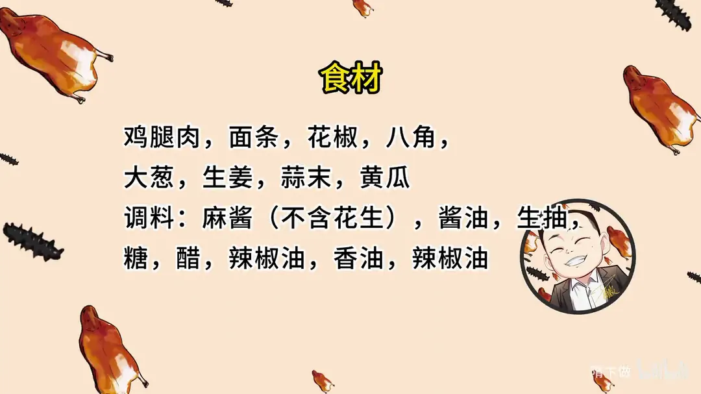
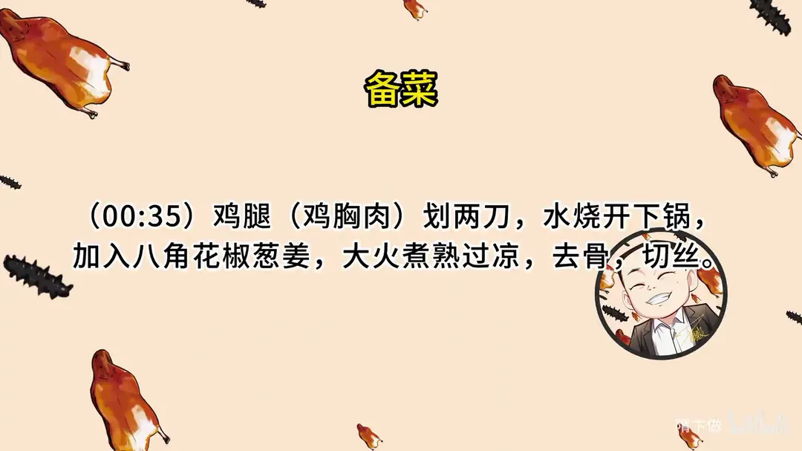
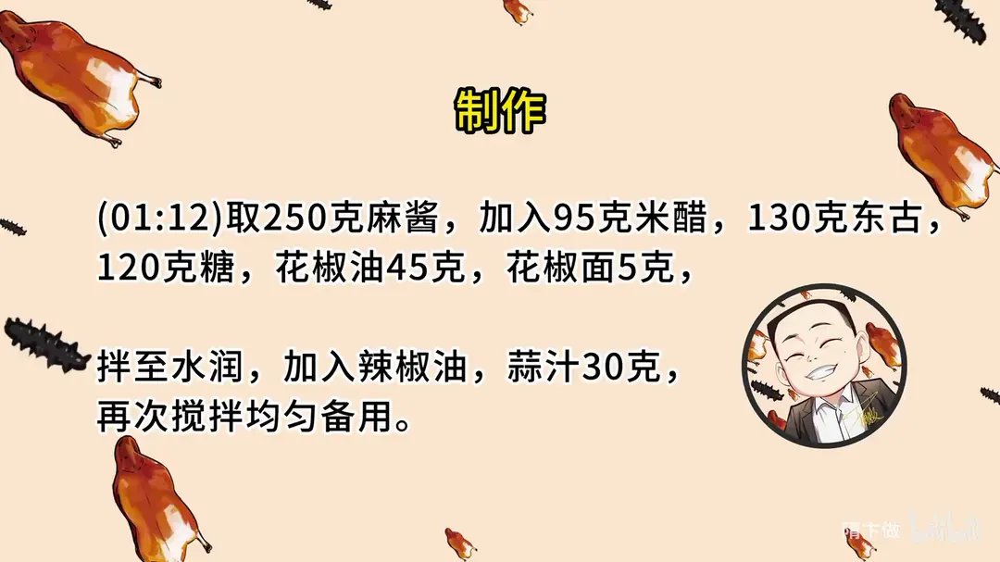
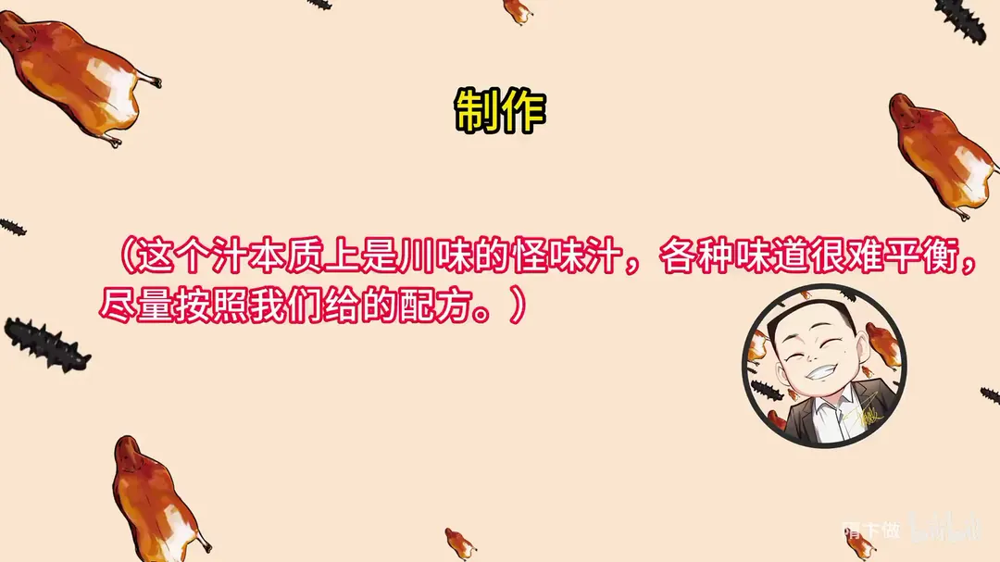
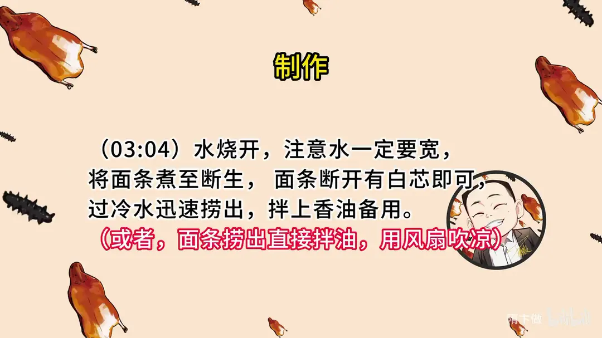
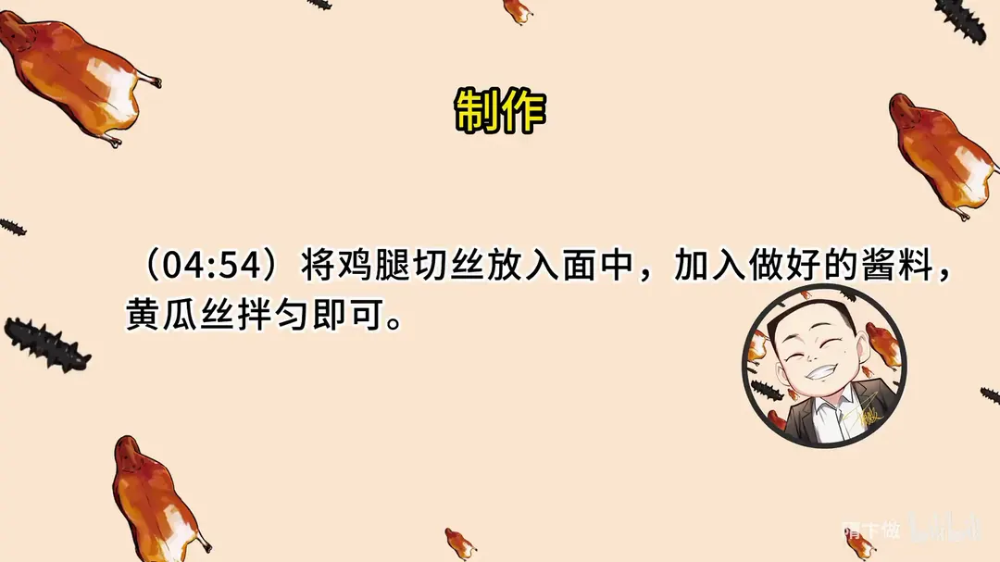
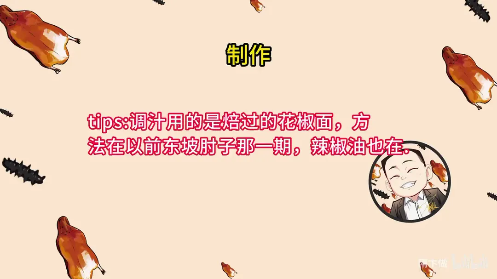

鸡丝凉面
隋卞一做。麻酱按配方调成川味怪味汁，面条煮至断生过冷水拌香油，配去骨鸡腿丝和黄瓜丝，夏天一碗就够。
原视频：https://www.bilibili.com/video/BV1vW4y1S7z8
食材
鸡腿肉、面条、黄瓜 等 17 样
| 类别 | 用料 | 用量 |
|---|---|---|
| 主料 | 鸡腿肉 | 适量 |
| 主料 | 面条 | 适量 |
| 主料 | 黄瓜 | 适量 |
| 香料 | 花椒 | 适量 |
| 香料 | 八角 | 适量 |
| 香料 | 大葱 | 适量 |
| 香料 | 生姜 | 适量 |
| 香料 | 蒜末 | 30g |
| 调料 | 麻酱（不含花生） | 250g |
| 调料 | 酱油（东古） | 130g |
| 调料 | 生抽 | 适量 |
| 调料 | 醋（米醋） | 95g |
| 调料 | 白糖 | 120g |
| 调料 | 花椒油 | 45g |
| 调料 | 花椒面 | 5g |
| 调料 | 辣椒油 | 适量 |
| 调料 | 香油 | 适量 |
步骤
- 煮鸡腿：鸡腿（鸡胸肉也行）划两刀，水烧开后下锅，加入八角、花椒、葱姜，大火煮熟，过凉。
- 切鸡丝：煮好的鸡腿去骨，切成丝。
- 调怪味汁：取 250g 麻酱，加入 95g 米醋、130g 东古、120g 白糖、45g 花椒油、5g 花椒面，拌至水润；再加入辣椒油、30g 蒜汁，再次搅拌均匀备用。
- 煮面：水烧开，水一定要宽，面条煮至断生，面条断开有白芯即可，过冷水迅速捞出，拌上香油备用。
- 拌面：将鸡腿丝放入面中，加入做好的酱料、黄瓜丝，拌匀即可。
小贴士
- 这个汁本质上是川味的怪味汁，各种味道很难平衡，尽量按照这个配方来调。
- 调汁用的是焙过的花椒面，焙花椒面的方法在东坡肘子那一期，辣椒油也在。
讲解要点
难度：★★★☆☆（做法简单，难点全在这碗汁：七味互相不抢，比例差一点就失衡）
为什么这么做
- 鸡腿先划两道：沿着骨头划开口子，热量进得均匀，熟得快；不想划就直接整只煮。
- 煮鸡腿只放八角、花椒、葱姜，大火烧开：这几样去腥就够，太多了会盖住鸡肉本身的味道；煮到筷子一扎不冒血水就是熟了。
- 麻酱要分次加酱油，一点点打稀：一次倒进去会结块、打不开；打到像麻酱小料那样水润才行，太干拌出来的面不利落。
- 用鲜味足的酱油代替清水调麻酱：酱油既稀释麻酱，又把咸鲜味带进去，一举两得。
- 酸甜按米醋、白糖约 1:1，糖再多一点：纯麻酱本身发苦，糖稍多才能压住苦味、把酸托起来。
- 花椒要用焙过的花椒面，再加花椒油：焙过的花椒面是「香、微麻」，不刺口；花椒油补足麻感，让麻味沉到面里。
- 面煮到断生、中间留一点白心：捞出来还有余温，会自己再往后熟一点，煮太烂拌完就没口感了。
- 过凉要快、捞出立刻拌香油与黄瓜丝最后放：在凉水里泡久了面就泡糟，香油在面条表面形成油膜防粘增香；黄瓜丝早放会被汁水泡软，失去清脆。
容易翻车
- 水不够宽，面一下锅就糊成一团，煮出来发黏。
- 手擀面偏软，煮完不够利落，这种面更适合用挂面、切面。
- 醋多了压甜、甜多了压醋、盐多了发苦，味道失衡基本都出在这三样上。
- 汁调得太干，拌的时候面抱团、拌不开。
- 鸡丝切太粗、黄瓜丝放太早，都影响入口的清爽感。
- 汁调得太稀也不行：麻酱汁要挂得住面条、每根面都带味，才叫鸡丝凉面。
热评补充
- 按配方 95g 米醋、120g 白糖，醋糖接近 1:1，糖多一点是因为纯芝麻酱会发苦，这个比例是对的，不建议凭感觉减糖。
- 用意大利面煮到同样硬度也能拌，口感很合适。
原片尾卡







原片文案
AI 字幕校准稿
马上就夏天了，夏天肯定有适合夏天吃的东西，今天教给你们一个万能的拌面汁：不管你家里的挂面、切面还是方便面，用这碗汁全都能给它消灭掉。这也是特别适合夏天吃的一个美食——鸡丝凉面。
先说鸡丝。今天我们选的是鸡腿，鸡腿一定要划两道子，熟的快一点；您就顺着骨头划一下，就这样了，下锅煮。锅里边烧热水，搁点大料瓣、花椒、葱姜，把鸡腿放里边，加上盖，大火烧开。不用撇浮沫什么的，煮熟就行了，筷子一扎不冒血水就熟了。一定要过凉，放在凉水里边，这一步很重要，不过的话一定会烫。
趁着鸡腿煮着，咱把汁给调了。比例你们都不用记，会给你们放到片尾里边。我们加纯麻酱，加一下酱油——酱油别一下子倒，咱们陆续地加；可不敢一次性给它加进去。酱油慢慢加，它会慢慢变稠。酱油呢，咱们用那种鲜味的酱油、生抽就可以了。得打到什么程度呢？就像我们那个麻酱小料似的，那么润就行了，太干一会儿拌完的面条它也不利落。这样就比较润了。然后加白糖、焙过的花椒面、蒜汁、葱花。焙过的花椒面，它是一个香、微麻的味道，再加上咱们放的花椒油，借助花椒油的麻。鸡丝凉面那个味道，它是一个很复合的味儿，酸甜麻辣咸鲜香，里面都有，每个味道都能尝得出来，但是都不冲突，这味儿就没有问题了。咱们加入辣椒油。在不加辣椒油之前的颜色看着肯定不像，加上之后就觉得是这个东西了。这个汁我们就和好了。
旁边的锅子烧热水煮面，水要宽一些。面下进去之后拿筷子给它捅开，防止粘连。这个面不用煮得很熟，主要断生就行，煮得太烂了一会儿吃着就没有口感了。千万注意，水不宽，煮出来的面条特别黏糊。这种面条呢一定是挂面、切面，它煮出来比较利落，家里的手擀面稍微太软了。煮到什么程度呢？挑起来以后软软乎乎的，揪开中间还有一点点白心就刚刚好。咱们把它迅速地过一下凉水，就直接捞了啊，这不能在里边泡时间长了，泡时间长了就泡糟了。捞出来拿油拌一下，来点香油，防止粘连。为什么煮的时候留一点白心？这面条本身还有点温度，还有一个自熟的阶段，搁那边晾凉就可以了。
鸡腿到时间了，筷子一扎不冒血水就起锅，一定要放在凉水里边过凉。拿过来咱们把它搞成丝：如果鸡腿不爱吃皮，把鸡皮撕了就行了；如果用鸡胸，煮熟之后刀一拍、撕成丝。鸡腿去骨，这个不像鸡胸那样要撕得很细很细，咱们切一切就行。切好之后直接放到盘里边。
面准备好，拿筷子抖一下，把鸡肉直接拌在面上。之前咱们这汁水差点香油，把香油倒进去，黄瓜丝一会儿再放，放早了就不脆了。得用两双筷子拌。正常这个鸡丝凉面，怎么也得让它看出是麻酱味、麻酱色。放完之后把黄瓜丝倒上，这就不用死乞白赖地扒拉，只要扒拉匀了就行了，吃的时候黄瓜应该是非常清脆的。简单的鸡丝凉面完成。
好吃，这个面，但要夏天吃才够味，再配点冰鸡肉，太爽了吧。这个面条的硬度是我最喜欢吃的，硬硬的，特别有嚼劲，鸡肉跟这个凉面真的好搭。你吃的应该不太明显的蒜汁的味道，对，但是那就是蒜味，我不说你可能就不知道这是蒜味，就是很符合的一个味道。各个味道它都有，而且平衡得很好，酸甜麻辣咸鲜香。这个味道特别特别的不好调：醋味重了，甜味吃不出来了；甜味重了，醋味吃不出来了；咸味重了，这个甜味你也吃不出来，它就成苦的了。然后麻辣味适中，相互都不抢，所以说比例这个东西，我一定给你们弄得很清晰。